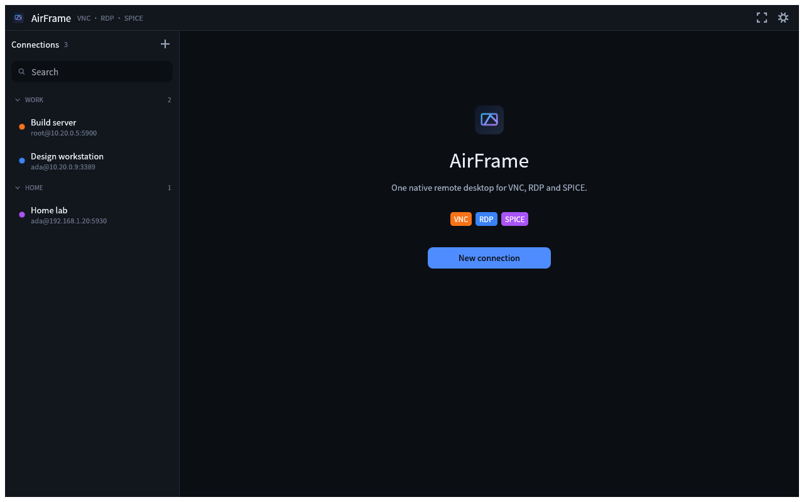
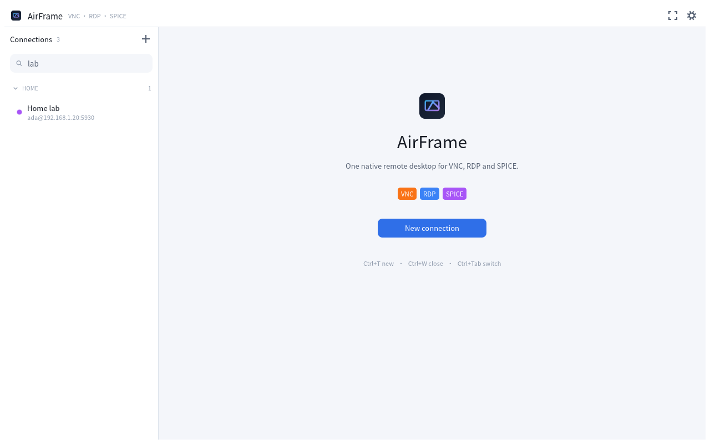
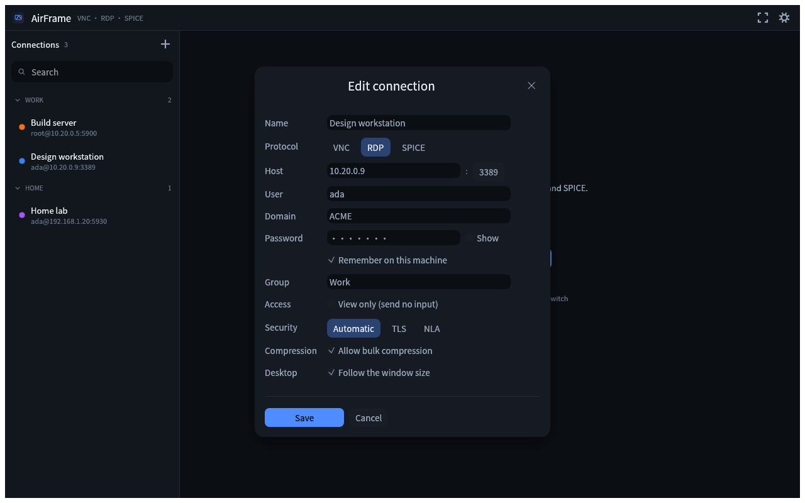
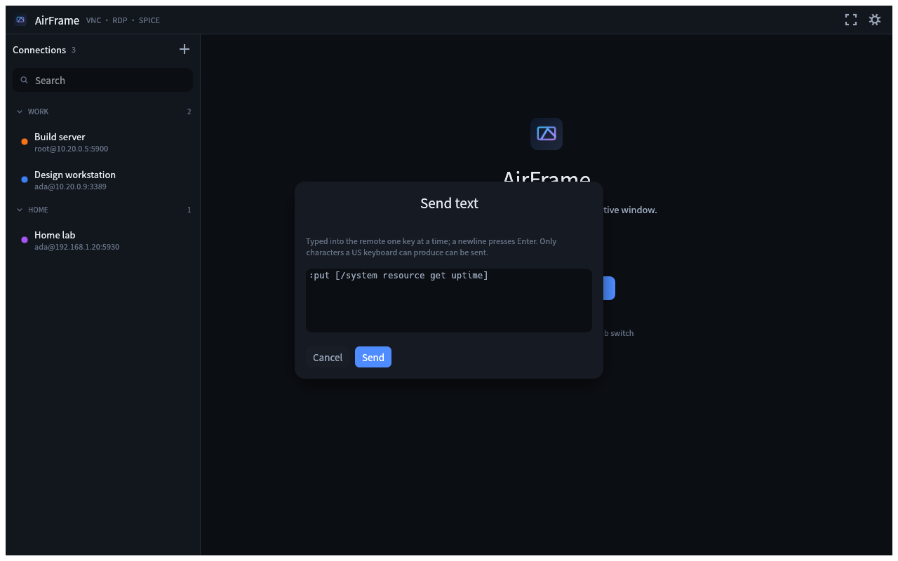

A lightweight, GPU-rendered remote-desktop client written in Rust. Manage every machine with unified connections, input and clipboard — no separate client per protocol.
Linux: build from source with cargo install --path apps/airframe — see the README.
Windows is not tested yet.

Built as one small, fast native app — not an Electron shell in a trench coat.
VNC, RDP and SPICE. Pick a protocol when creating a connection and the default port fills itself in.
Built on egui/wgpu. Starts instantly, sips memory, and runs natively on X11, Wayland and macOS.
Groups, instant search, tabs (Ctrl+T new, Ctrl+W close), and vnc:// links for sharing.
Clipboard text syncs with the remote host. Ctrl+Shift+V opens a send-text window that bypasses key mapping.
Keys are translated from their physical position, so Dvorak or AZERTY on your machine never leaks into the session.
Passwords live in memory for the current run only, unless you explicitly tick "remember password".
Each backend is a thin, dedicated adapter over a mature protocol library, behind one protocol-agnostic session contract.
Raw, CopyRect, Hextile and ZRLE framebuffers, decoded off the UI thread.
Automatic security negotiation, compression, and a desktop that follows your viewport.
Display and input channels for virtual machines, driven straight from the session contract.
An overlay toolbar, fullscreen, fit / 1:1 / stretch zoom, view-only mode — and the shortcuts you already expect.
| New connection | Ctrl+T |
| Close current session | Ctrl+W |
| Switch between sessions | Ctrl+Tab |
| Open send-text window | Ctrl+Shift+V |
| Fullscreen | F11 |



Free and open source. Clone it, build it, or grab a release.